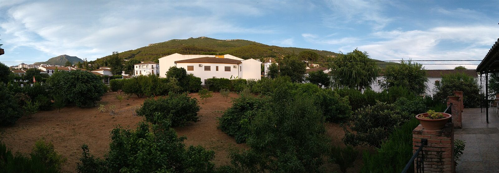
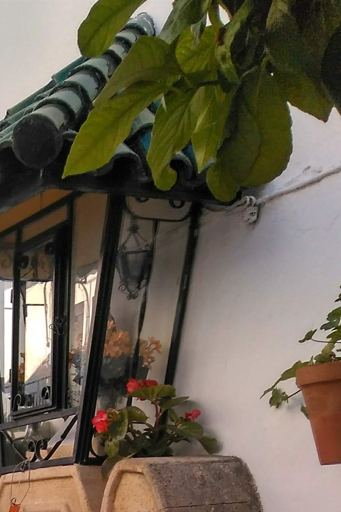
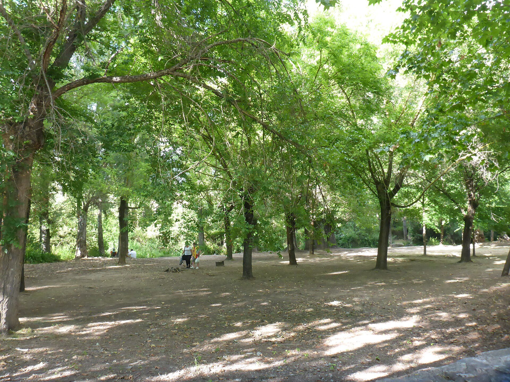

El motivo
Describe la cuestión inmobiliaria que quieres consultar.
AGENCIA INMOBILIARIA DE EL BOSQUE
Una referencia en El Bosque para plantear tu consulta inmobiliaria. Contacta directamente con la agencia.
CONTACTAR
PLANO CONCEPTUAL
SIN ESCALA GEOGRÁFICA
02 / LECTURA DEL TERRITORIO
El Bosque, Cádiz. Arquitectura blanca, paisaje de sierra y el entorno del río Majaceite.


EL BOSQUEPROVINCIA DE CÁDIZ
Estas imágenes describen el entorno; no forman parte de una cartera de inmuebles ni delimitan zonas de actuación.
Fuente del contexto local: Cádiz Turismo ↗03 / TRAZAR LA CONSULTA
Prepara tu llamada con estas referencias. Son una ayuda para ordenar tus preguntas.
Describe la cuestión inmobiliaria que quieres consultar.
Si tu consulta se refiere a un inmueble o una zona, ten sus datos a mano.
Pregunta qué información puede facilitarte la agencia para tu caso concreto.
Para conocer servicios, inmuebles o disponibilidad, consulta por teléfono.
Iniciar la llamada04 / PUNTO DE ENCUENTRO
La dirección no incluye número ni punto kilométrico. Confirma el punto de encuentro antes de venir.